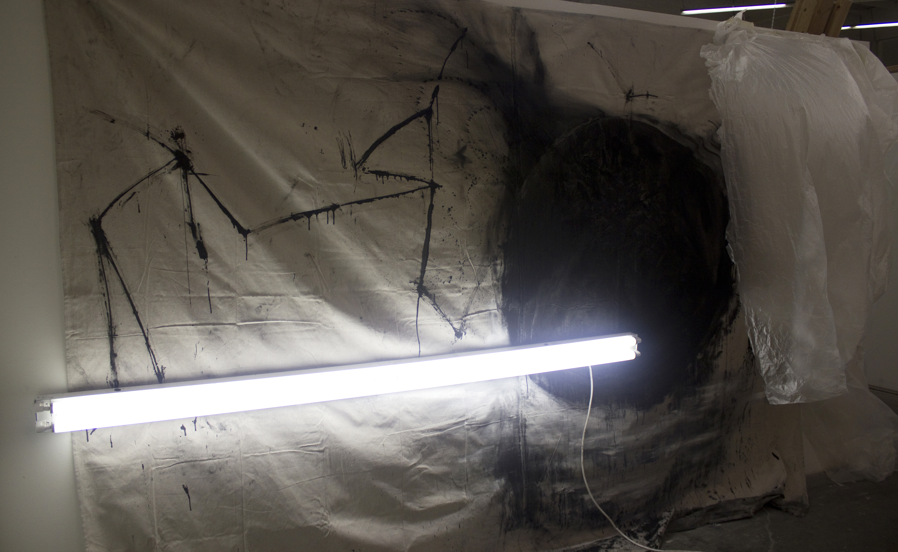
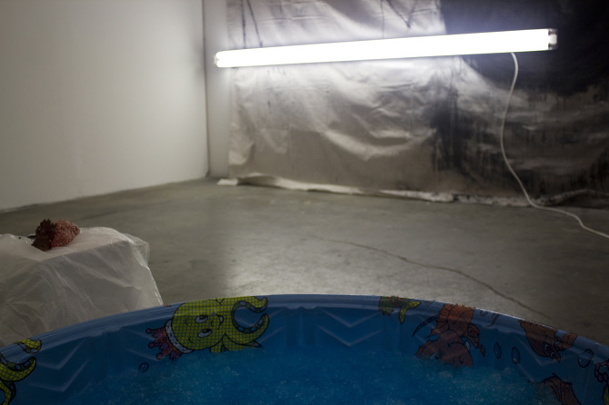
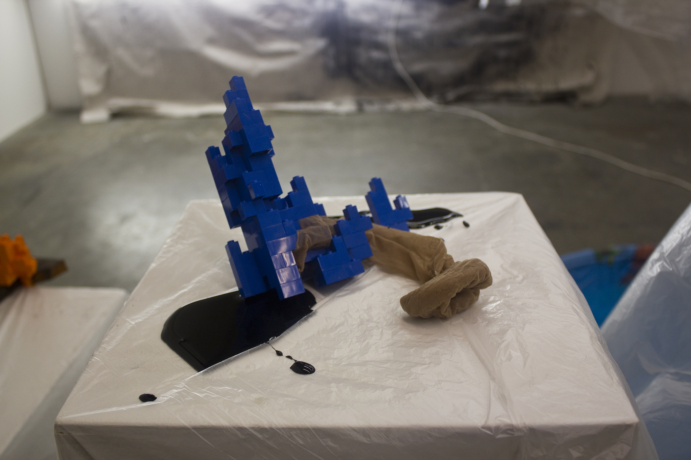
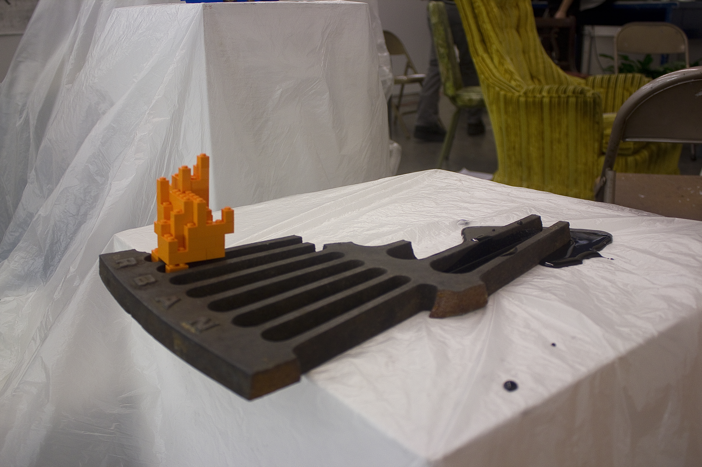
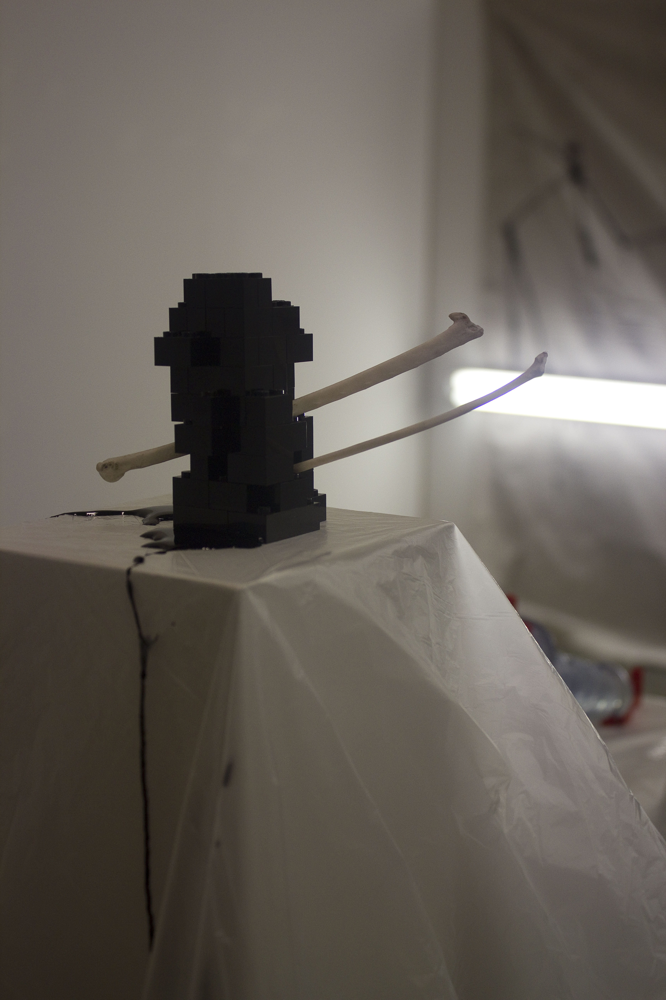
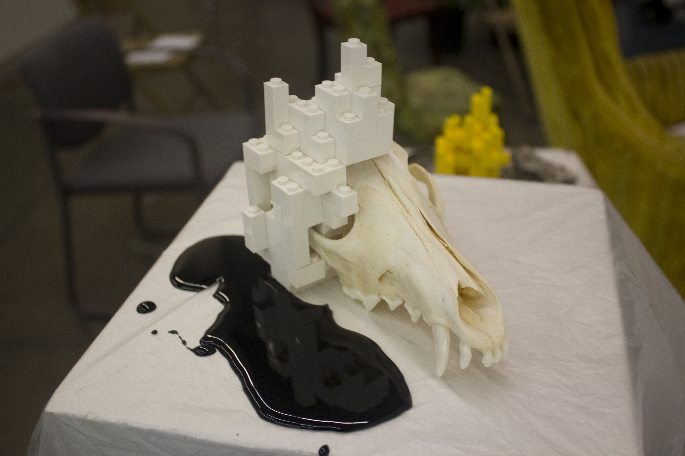
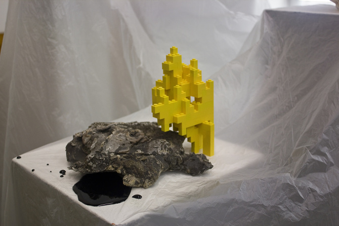
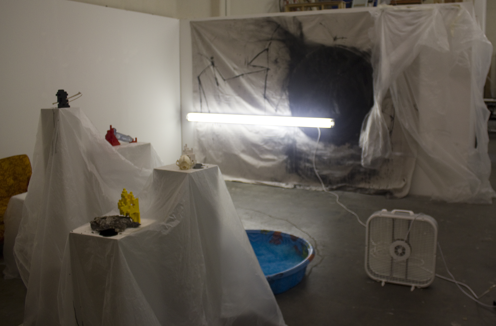
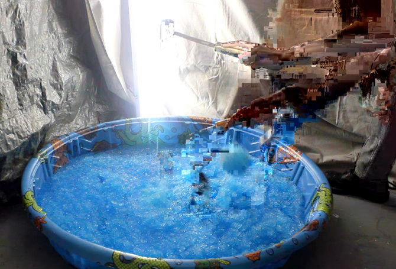

Joy @ Last to Know There is No Happiness in the World
Joy @ Last to Know There is No Happiness in the World is a mixed media installation including fluorescent light, box fans, plastic sheeting, children's wading pool, water, sodium polyacrylate, Legos, miscellaneous found objects, Karo syrup, ink, and mixed media painting on canvas. 2012








